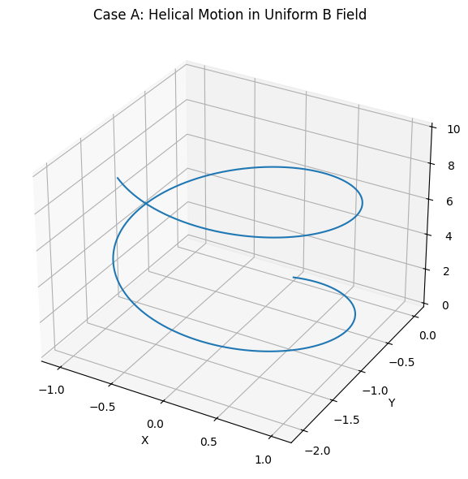
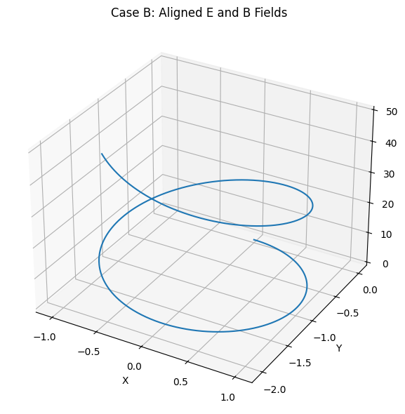

Problem 1
Sector 1: Conceptual and Contextual Groundwork
The Lorentz force is a fundamental principle in classical electrodynamics that governs the motion of charged particles under the influence of electric and magnetic fields. It is expressed as:
where: - \(q\) is the electric charge of the particle, - \(\mathbf{E}\) is the electric field vector, - \(\mathbf{B}\) is the magnetic field vector, - \(\mathbf{v}\) is the velocity vector of the particle.
This force law is central to the operation of several modern technologies and natural phenomena.
Real-World Systems Influenced by the Lorentz Force
1. Particle Accelerators
In particle accelerators such as cyclotrons and synchrotrons, electric fields are used to accelerate particles, while magnetic fields guide their paths.
-
The electric field provides work on the particle: $$ W = q\mathbf{E} \cdot \mathbf{d} $$ which increases the kinetic energy: $$ \Delta K = qE\Delta x \quad \text{(for uniform } \mathbf{E} \text{ along } x) $$
-
The magnetic field bends the particle’s trajectory due to the \(\mathbf{v} \times \mathbf{B}\) term: $$ \mathbf{F}_\text{mag} = q\mathbf{v} \times \mathbf{B} $$
-
If \(\mathbf{v} \perp \mathbf{B}\), the particle follows a circular path with radius of curvature: $$ r = \frac{mv}{|q|B} $$
-
The cyclotron frequency, or Larmor frequency, is given by: $$ \omega_c = \frac{|q|B}{m} $$
2. Mass Spectrometers
Mass spectrometers exploit the Lorentz force to separate ions based on mass-to-charge ratio \((m/q)\).
-
After acceleration by an electric field to a velocity \(v\), the ion enters a magnetic field: $$ qE = \frac{1}{2}mv^2 \Rightarrow v = \sqrt{\frac{2qV}{m}} $$
-
The radius of curvature in the magnetic field allows mass determination: $$ r = \frac{mv}{qB} \quad \Rightarrow \quad \frac{m}{q} = \frac{rB}{v} $$
3. Plasma Confinement Devices
Devices such as tokamaks and stellarators use magnetic fields to confine high-temperature plasmas.
-
Charged particles spiral around magnetic field lines: $$ \text{Helical motion: } \mathbf{v} = v_\parallel \hat{b} + v_\perp $$
-
The magnetic mirror effect occurs when field strength varies along the path: $$ \mu = \frac{mv_\perp^2}{2B} \quad \text{(magnetic moment conserved)} $$
4. Astrophysical Environments
Charged particles in space, such as cosmic rays and solar wind ions, are deflected and guided by galactic and planetary magnetic fields.
-
The Earth’s magnetosphere traps particles in radiation belts, e.g., Van Allen belts.
-
Drift motion arises due to inhomogeneities in \(\mathbf{B}\):
Physical Roles of Electric and Magnetic Fields
Electric Fields: Acceleration and Steering
An electric field performs work on a charged particle:
This force causes linear acceleration in the direction of the field for positive charges, and opposite for negative ones.
-
Work-energy relation: $$ W = \Delta K = qEd $$
-
In time-dependent fields, particles can be oscillated or focused using RF cavities.
Magnetic Fields: Guidance and Curvature
Magnetic fields do no work on charged particles since:
Instead, they alter the direction of motion, producing:
- Circular or helical orbits depending on velocity component parallel to \(\mathbf{B}\).
-
Gyromotion with characteristic radius and frequency: $$ r_L = \frac{mv_\perp}{|q|B}, \quad \omega_L = \frac{|q|B}{m} $$
-
Magnetic confinement by forcing charged particles to remain near field lines.
These foundational concepts are critical before undertaking numerical simulations of the Lorentz force, as they inform expected behaviors and aid in validating results.
Sector 2: Mathematical and Physical Modeling
In order to simulate the motion of charged particles under electromagnetic influence, we must begin by rigorously formulating the equation of motion derived from classical electrodynamics.
Equation of Motion
The total force \(\mathbf{F}\) acting on a charged particle in the presence of electric and magnetic fields is given by the Lorentz force law:
According to Newton's second law, this force is also equal to the time derivative of momentum:
Combining these, we obtain the fundamental equation of motion:
For numerical integration, this can be rewritten as a first-order system:
Numerical Methods for Integration
As these differential equations are generally nonlinear and lack closed-form solutions for arbitrary field configurations, we must resort to numerical integration techniques. Two widely used methods are:
1. Euler Method
The Euler method provides a first-order approximation:
-
Velocity update: $$ \mathbf{v}_{n+1} = \mathbf{v}_n + \Delta t \cdot \frac{q}{m}(\mathbf{E}_n + \mathbf{v}_n \times \mathbf{B}_n) $$
-
Position update: $$ \mathbf{r}_{n+1} = \mathbf{r}_n + \Delta t \cdot \mathbf{v}_n $$
While simple and fast, it is only conditionally stable and prone to significant numerical error in the presence of strong magnetic fields.
2. Runge-Kutta Method (4th Order)
A more accurate approach is the classical fourth-order Runge-Kutta (RK4) method. For a general system \(\dot{\mathbf{y}} = \mathbf{f}(t, \mathbf{y})\), it proceeds as:
Applied to our velocity and position system, RK4 ensures higher stability and accuracy, especially when dealing with helical or oscillatory motion induced by \(\mathbf{B}\) fields.
Simulation Parameters
To fully specify the problem, the following physical parameters must be defined prior to integration:
1. Charge (\(q\))
Determines the sign and magnitude of the Lorentz force. Common values include:
- Electron: \(q = -1.6 \times 10^{-19}\) C
- Proton: \(q = +1.6 \times 10^{-19}\) C
2. Mass (\(m\))
Inertia of the particle. Influences acceleration under applied force:
- Electron: \(m = 9.11 \times 10^{-31}\) kg
- Proton: \(m = 1.67 \times 10^{-27}\) kg
3. Initial Velocity (\(\mathbf{v}_0\))
Vector defining the particle's initial state of motion. Components relative to the field directions (\(v_\parallel\), \(v_\perp\)) determine motion type:
- Circular (\(\mathbf{v} \perp \mathbf{B}\))
- Helical (general 3D case)
4. Electric Field (\(\mathbf{E}\))
Applied field that contributes to linear acceleration: $$ \mathbf{F}_\text{electric} = q\mathbf{E} $$
Can be uniform, non-uniform, static, or time-varying.
5. Magnetic Field (\(\mathbf{B}\))
Field responsible for transverse force: $$ \mathbf{F}_\text{magnetic} = q\mathbf{v} \times \mathbf{B} $$
Primarily affects trajectory curvature and confinement.
Together, these equations and parameters form the foundation for simulating the motion of charged particles under electromagnetic fields, enabling us to build increasingly realistic and physically accurate models.
Electromagnetism: Lorentz Force Simulation
We simulate the motion of a charged particle subject to electric and magnetic fields using the Lorentz Force law.
Lorentz Force Law
Using Newton's second law:
We also track:
We'll numerically integrate this system using the Euler method.
Parameters
- \(q = 1 \, \text{C}\)
- \(m = 0.001 \, \text{kg}\)
- Time step \(\Delta t = 0.001 \, \text{s}\)
- Number of steps: \(N = 10000\)
Code and Plots



import numpy as np
import matplotlib.pyplot as plt
from mpl_toolkits.mplot3d import Axes3D
# === Sector 1: Common Functions ===
def lorentz_force(q, m, E, B, v):
"""Compute the Lorentz force per unit mass."""
return (q / m) * (E + np.cross(v, B))
def simulate_motion(q, m, E, B, v_init, r_init, dt, num_steps):
"""Simulate particle trajectory under Lorentz force using Euler method."""
v = np.array(v_init, dtype=float)
r = np.array(r_init, dtype=float)
trajectory = [r.copy()]
for _ in range(num_steps):
a = lorentz_force(q, m, E, B, v)
v += a * dt
r += v * dt
trajectory.append(r.copy())
return np.array(trajectory)
def plot_trajectory(trajectory, title='3D Trajectory'):
"""Plot 3D trajectory of the particle."""
fig = plt.figure(figsize=(8, 6))
ax = fig.add_subplot(111, projection='3d')
ax.plot(trajectory[:, 0], trajectory[:, 1], trajectory[:, 2])
ax.set_xlabel('X')
ax.set_ylabel('Y')
ax.set_zlabel('Z')
ax.set_title(title)
ax.grid(True)
plt.tight_layout()
plt.show()
# === Sector 2: Simulation Parameters ===
q, m = 1.0, 1.0 # Charge and mass
dt = 0.01 # Time step
steps = 1000 # Number of integration steps
# === Sector 3: Case A - Helical Motion ===
print("Running Case A: Helical Motion (Uniform Magnetic Field Only)")
B_A = np.array([0, 0, 1])
E_A = np.zeros(3)
v0_A = [1, 0, 1]
r0_A = [0, 0, 0]
trajectory_A = simulate_motion(q, m, E_A, B_A, v0_A, r0_A, dt, steps)
plot_trajectory(trajectory_A, title='Case A: Helical Motion in Uniform B Field')
# === Sector 4: Case B - Aligned E and B ===
print("Running Case B: Aligned Electric and Magnetic Fields")
B_B = np.array([0, 0, 1])
E_B = np.array([0, 0, 1])
v0_B = [1, 0, 0]
r0_B = [0, 0, 0]
trajectory_B = simulate_motion(q, m, E_B, B_B, v0_B, r0_B, dt, steps)
plot_trajectory(trajectory_B, title='Case B: Aligned E and B Fields')
# === Sector 5: Case C - Crossed E × B Fields ===
print("Running Case C: Crossed Electric and Magnetic Fields (E × B Drift)")
B_C = np.array([0, 0, 1])
E_C = np.array([1, 0, 0])
v0_C = [0, 0, 0]
r0_C = [0, 0, 0]
trajectory_C = simulate_motion(q, m, E_C, B_C, v0_C, r0_C, dt, steps)
plot_trajectory(trajectory_C, title='Case C: Crossed E and B Fields (E × B Drift)')